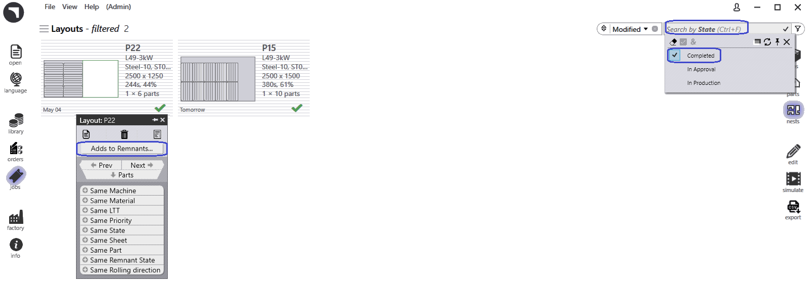

Manual Remnant Sheet Management
Configure Manual Remnant
-
Click factory → Settings → Job. Select Update sheet inventory on nest (un)release only

Manual Remnant sheet from JOB
-
Mark complete layout which marked with green color tick Right-Click and Click Adds to Remnants
-
Thus the Remnant sheet is manually added to sheet database.

Manual Remnant sheet from JOB Nest
-
Switch to JOB → Nests Page. Use Filters and select State
-
Pick Completed which shows all completed layouts.
-
-
Right-Click the layout which manual remnant need to be created and click Click Adds to Remnants

Remove Remnants
-
In case the remnant sheet damaged or lost, instead of delete remnant sheet from sheet inventory, for Manual created remnants alone, Right-Click and click Remove from Remnants
-
This removes remnant sheet from sheet inventory and also notifcation "Partially shaded square icon to display remnant sheet created".
-

| Remnant sheets(created by Auto/Manual) are selected at high proiority during auto nest plan or interactive nest plan. |